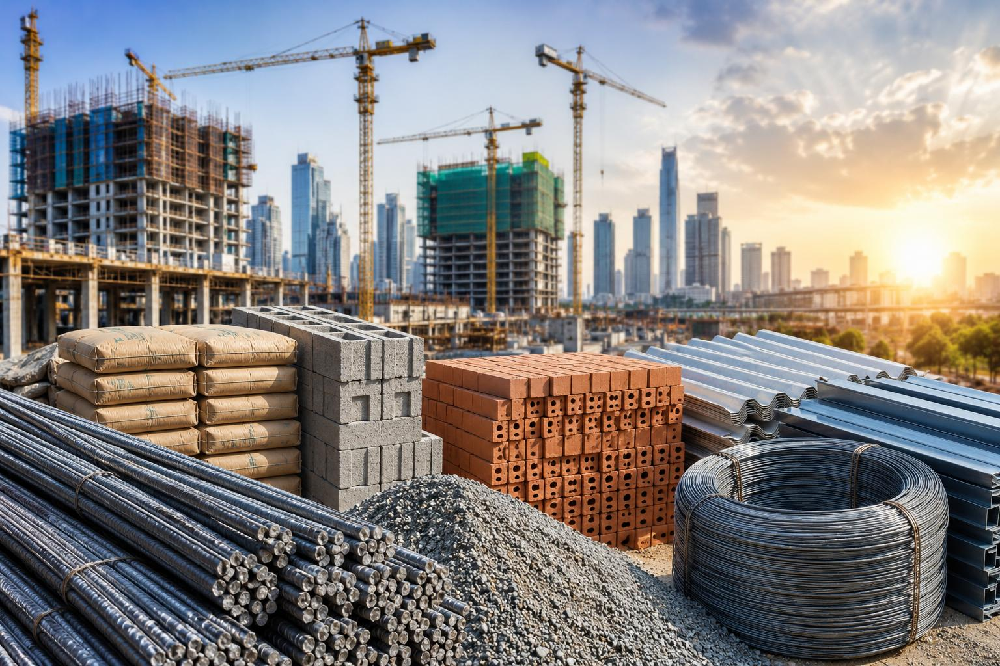

Introduction to Construction Materials
Overview, role and classification of construction materials serta kaedah pembinaan dalam projek kejuruteraan awam.
Laman PdP • Jabatan Kejuruteraan Awam
Kenali bahan binaan, kaedah pembinaan dan pemilihan bahan yang sesuai dalam amalan kejuruteraan awam.
Lihat Maklumat Kursus
DCC10292 – Construction Materials ialah kursus 2 kredit bagi Semester 1, Tahun 1 dalam program Diploma in Civil Engineering.
Overview, role and classification of construction materials serta kaedah pembinaan dalam projek kejuruteraan awam.
Cement, aggregates, water, admixtures, concrete mixture serta sifat konkrit segar dan keras.
Sifat, jenis, ciri, kecacatan, proses pengeluaran dan produk kayu tempatan.
Jenis dan sifat bata serta blok, proses pembuatan dan brickwork.
Konsep asas besi dan keluli serta aplikasi dalam tetulang, roofing, cladding dan building frameworks.
Continuous Assessment (CA) ialah 100% dan Final Examination (FE) ialah 0%.
Reka bentuk bangunan kediaman menggunakan brick, timber, concrete dan steel.
Nilai kos, structural properties, aesthetics, durability dan sustainability.
Terangkan kaedah traditional atau advanced dan faktor pemilihan kaedah.
Analisis sustainability dan pilih satu perspektif: cultural, social, economic, environmental atau legal.
Output boleh berbentuk AutoCAD/BIM drawing atau 3D model.
Gunakan Canva atau Microsoft PowerPoint dan bersedia menjawab soalan tentang reka bentuk.
CLO merangkumi penerangan bahan dan kaedah pembinaan, pemilihan bahan dan kaedah dengan mengambil kira spesifikasi, keadaan dan sustainability, serta pembentangan dengan komunikasi berkesan.
Progress 1 melibatkan Topic 2: Concrete Materials & Mixture dan Topic 3: Timber. Penilaian pada Week 9.
Progress 2 melibatkan Topic 4: Brick dan Topic 5: Steel. Penilaian pada Week 13.
Mini Project Presentation dijalankan pada Week 14.
Ada persoalan tentang kursus, tugasan atau mini project? Maklumat hubungan: (isi di sini)